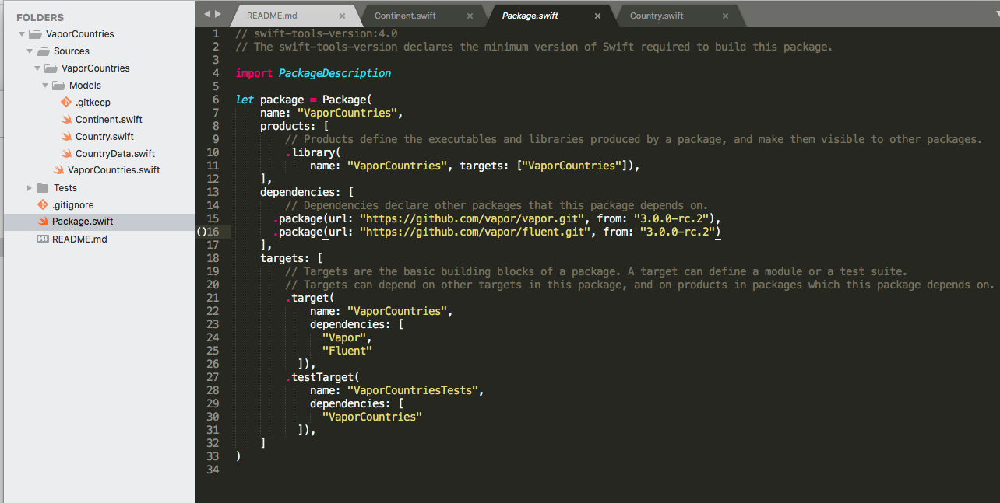

Making a New Vapor Package
Use Swift Package Manager
mkdir MyPackage
cd MyPackage
Initialize a Package
swift package init --type library
Add Dependencies
I’m making a generic Fluent Models, so I only need Vapor and Fluent.
dependencies: [
.package(url: "https://github.com/vapor/vapor.git", from: "3.0.0-rc.2"),
.package(url: "https://github.com/vapor/fluent.git", from: "3.0.0-rc.2")
],
Add Targets
targets: [
.target(
name: "VaporCountries",
dependencies: [
"Vapor",
"Fluent"
]),
.testTarget(
name: "VaporCountriesTests",
dependencies: [
"VaporCountries"
]),
]
Add Your Swift Files
Mine looks like this:

Tag your Release
git tag 0.0.0
git push --tags
Tag 0.0.0 is used, in Vapour community, for testing.
Make sure that anything that you export is marked as public
public struct CountryMigration<D>: Migration where D: QuerySupporting & SchemaSupporting & IndexSupporting & ReferenceSupporting {
public typealias Database = D
Make Example Project
My first Vapor package is (It adds all countries and continents to any Vapor supported database):
https:/github.commihaelamj/VaporCountries
It’s usage:
migrations.add(migration: ContinentMigration<SQLiteDatabase>.self, database: .sqlite)
migrations.add(migration: CountryMigration<SQLiteDatabase>.self, database: .sqlite)
Example project:
https:/github.commihaelamj/TestVaporCountries
Prev: Generic Pre-populated Models in Fluent
Next: Parent-Child relationships in Generic Fluent Models